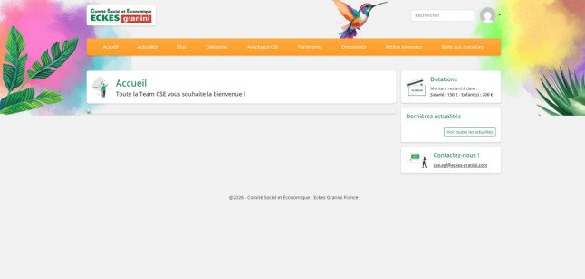
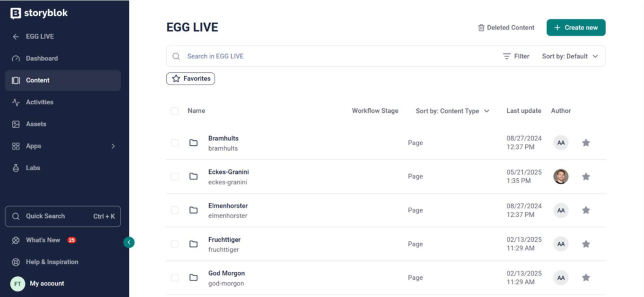
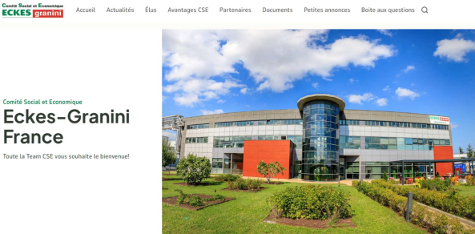

Migration complète du site web du CSE d'Eckes Granini (WordPress + PHP) vers Storyblok CMS. Conception, intégration des contenus, formation des administrateurs et rédaction de la documentation.
Dans le cadre de mon BTS SIO SLAM (2ᵉ année), j'ai effectué mon stage chez Eckes Granini, groupe agroalimentaire international spécialisé dans les jus de fruits, sur leur site de Mâcon. La mission confiée était la migration du site web du CSE (Comité Social et Économique) depuis une solution WordPress/PHP vieillissante vers le CMS headless Storyblok.
L'ancien site, géré par un prestataire externe (Les Petits Zèbres), avait cessé de fonctionner correctement après l'arrêt de ce prestataire : images non affichées, design obsolète, aucune mise à jour possible. Le nouveau site devait être moderne, sécurisé et entièrement gérable en autonomie par les membres du CSE.

Ancien site CSE sous WordPress

Interface Storyblok (administration)

Nouveau site CSE après migration
Retrouvez l'intégralité du compte rendu de stage détaillant la migration du site CSE d'Eckes Granini vers Storyblok.
Télécharger le compte rendu (PDF)Architecture headless : les salariés consultent le site via navigateur après authentification. Les membres CSE administrent le contenu via l'interface Storyblok, sans compétences techniques. L'hébergement est assuré gratuitement par le groupe EGG (économie d'environ 10 000 €/an).
Ce stage m'a permis de mener un projet de bout en bout dans un environnement professionnel réel, en toute autonomie. J'ai appris à utiliser un CMS headless moderne (Storyblok), à gérer les besoins d'un client interne (le CSE), à structurer un projet sur 5 semaines et à former des utilisateurs non techniques. Le résultat concret : un site fonctionnel, sécurisé, accessible aux salariés, et entièrement gérable par le CSE sans prestataire externe. Une économie d'environ 10 000 €/an pour l'entreprise.
| Type | Stage professionnel |
| Entreprise | Eckes Granini Mâcon |
| Durée | 5 semaines |
| Solution | Storyblok CMS |
| Hébergement | Groupe EGG (gratuit) |
| Économie | ~10 000 €/an |
| Année | BTS SIO — 2ᵉ année |